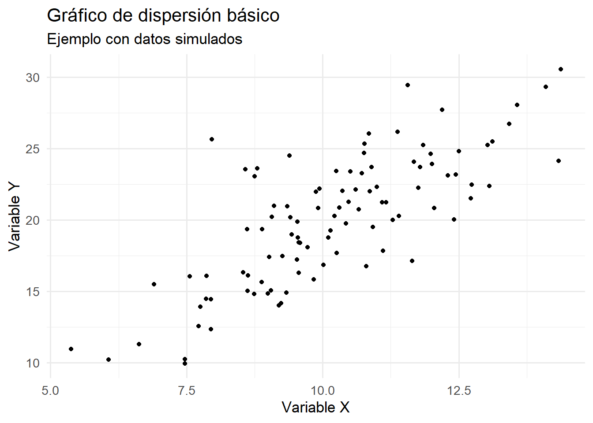

14.1 Contexto y origen de la base de datos utilizada
La base de datos empleada en este capítulo corresponde a un estudio transversal realizado en la Universidad de San Carlos de Guatemala en 2002. El objetivo del estudio fue caracterizar a la población estudiantil de primer ingreso, recolectando información de 460 estudiantes de diversas facultades. Las variables incluidas abarcan datos sociodemográficos (facultad, edad, sexo, estado civil, jornada de estudio, año de ingreso), antropométricos (peso, talla, IMC), clínicos (presión arterial) y de hábitos (tabaquismo, consumo de alcohol, actividad física, entre otros). Esta base de datos, disponible en formato Excel y CSV, constituye un recurso ideal para ilustrar las capacidades de visualización de ggplot2 en el análisis estadístico aplicado a datos reales (Wickham, 2016).
Antes de iniciar cualquier análisis, es fundamental importar correctamente la base de datos y asegurarse de que las variables tengan el tipo de dato adecuado. Se recomienda guardar el archivo en la carpeta de trabajo del proyecto y utilizar los siguientes comandos para su importación y verificación:
# Instalar y cargar los paquetes necesariosif (!require("tidyverse")) install.packages("tidyverse")if (!require("readxl")) install.packages("readxl")# Importar la base de datos USAC 2002USAC2002 <-read_excel("Base_de_datos_USAC_2002.xlsx", sheet ="DATOS")# Comprobar la estructura de las variablesstr(USAC2002)
Este paso permite identificar si existen variables que requieren ser convertidas a factores (por ejemplo, SEXO, FACULTAD, JORNADA) o si es necesario ajustar nombres para facilitar su uso en R. La correcta preparación de los datos es esencial para obtener visualizaciones precisas y significativas (Wickham, 2016).
14.2 Introducción al paquete ggplot2
ggplot2 es un paquete de R que se utiliza para crear gráficos estadísticos de alta calidad de manera sencilla y flexible. Forma parte del conjunto de herramientas conocido como tidyverse, que está diseñado para facilitar el análisis y la visualización de datos. La principal característica de ggplot2 es que se basa en la “gramática de los gráficos”, una idea desarrollada por Wilkinson (2005) y adaptada por Wickham (2016), que permite construir gráficos complejos a partir de piezas simples y combinables.
A diferencia de los gráficos base de R, donde cada tipo de gráfico tiene su propia función y la personalización puede ser complicada, ggplot2 utiliza una estructura modular. Esto significa que se puede empezar con un gráfico básico y, poco a poco, ir añadiendo o modificando elementos para adaptarlo a lo que se necesita. Así, se pueden crear gráficos claros, atractivos y personalizados para comunicar los resultados de un análisis de datos de forma efectiva (Wickham, 2016).
14.2.1 Ventajas principales de ggplot2
Permite crear muchos tipos de gráficos, como barras, líneas, puntos, histogramas y boxplots, entre otros.
Cada parte del gráfico se puede personalizar fácilmente: colores, títulos, etiquetas, escalas, temas y más.
Se integra muy bien con otras herramientas del tidyverse, lo que facilita trabajar con datos y visualizarlos en un solo flujo de trabajo.
Utiliza una lógica de “capas”, lo que significa que se pueden añadir diferentes elementos (como puntos, líneas o etiquetas) uno sobre otro, de manera ordenada y controlada.
14.2.2 ¿Cómo funciona la gramática de los gráficos?
La gramática de los gráficos es como una receta que indica qué ingredientes debe tener un gráfico y cómo combinarlos. En ggplot2, cada gráfico se construye a partir de varios componentes básicos (Wickham, 2016; Wilkinson, 2005):
Datos: Es el conjunto de información que se quiere visualizar, normalmente en forma de tabla o data frame.
Mapeos estéticos (aes): Son las instrucciones que indican cómo se relacionan las variables de los datos con los elementos visuales del gráfico, como la posición en los ejes, el color o el tamaño de los puntos.
Geometrías (geoms): Son las formas que se usan para mostrar los datos, por ejemplo, barras para un gráfico de barras, puntos para un gráfico de dispersión, o cajas para un boxplot.
Escalas: Permiten controlar cómo se muestran los valores en el gráfico, por ejemplo, los colores, los tamaños o los intervalos de los ejes.
Sistemas de coordenadas: Determinan el tipo de espacio en el que se dibuja el gráfico, como el sistema cartesiano (el más común) o el sistema polar (para gráficos circulares).
Facetas: Sirven para dividir el gráfico en varios paneles, mostrando diferentes grupos de datos uno al lado del otro, lo que facilita la comparación entre categorías.
Temas: Permiten cambiar el aspecto general del gráfico, como el fondo, los textos y las líneas de cuadrícula, para que el resultado sea más claro y profesional.
14.3 Estructura básica de un gráfico en ggplot2
La construcción de un gráfico en ggplot2 sigue una lógica de capas, donde cada componente se añade mediante el operador +. El proceso básico incluye:
Iniciar el objeto gráfico con la función ggplot(), especificando el conjunto de datos y los mapeos estéticos principales mediante aes(). Por ejemplo, se puede representar la EDAD en el eje X y el IMC en el eje Y.
Añadir una o más capas geométricas, como geom_point() para puntos, geom_histogram() para histogramas, o geom_boxplot() para diagramas de caja.
Incorporar escalas para controlar la interpretación de los valores, como escalas de color o tamaño.
Añadir etiquetas y títulos con labs() o ggtitle(), y modificar la apariencia general del gráfico con funciones de tema como theme_minimal().
Opcionalmente, añadir facetas para dividir el gráfico en paneles según una variable categórica, como SEXO o JORNADA.
Ejemplo básico:
ggplot(data = USAC2002, aes(x = EDAD, y = IMC)) +geom_point() +labs(title ="Relación entre edad e IMC", x ="Edad (años)", y ="Índice de Masa Corporal (IMC)")
En este ejemplo, cada línea añade un componente al gráfico. El mapeo estético aes(x = EDAD, y = IMC) define qué variables se representan en los ejes, mientras que geom_point() indica que se utilizarán puntos para visualizar la relación.
14.4 Creación de gráficos exploratorios y descriptivos
En el análisis de datos, la visualización inicial es clave para comprender la estructura y las características principales de las variables. ggplot2 permite construir de manera eficiente los gráficos más utilizados en la exploración y descripción de datos, facilitando la identificación de patrones, tendencias y diferencias entre grupos (Wickham, 2016).
14.4.1 Gráficos de barras para variables categóricas
El gráfico de barras es una herramienta fundamental para mostrar la cantidad de observaciones en cada categoría de una variable cualitativa. En ggplot2, este tipo de gráfico se genera de forma automática a partir de los datos, permitiendo comparar visualmente la frecuencia de cada grupo.
# Crear gráfico de barras para la variable JORNADA# Este gráfico muestra la distribución de estudiantes en las diferentes jornadasggplot(data = USAC2002, # Especificamos la base de datosaes(x = JORNADA)) +# Variable categórica en el eje Xgeom_bar(fill ="orange", # Color de relleno de las barrascolor ="black") +# Color del borde de las barraslabs(title ="Distribución de estudiantes por jornada", # Título del gráficox ="Jornada", # Etiqueta del eje Xy ="Frecuencia") # Etiqueta del eje Y
Explicación del código:
La función ggplot() inicia la construcción del gráfico especificando los datos y el mapeo estético.
geom_bar() crea automáticamente las barras contando las observaciones en cada categoría.
Los argumentos fill y color personalizan la apariencia de las barras.
La función labs() añade las etiquetas necesarias para la interpretación del gráfico.
14.4.2 Histogramas para variables continuas
El histograma es el gráfico más adecuado para examinar la distribución de una variable numérica. Permite observar la forma general de los datos, la presencia de asimetrías y la existencia de valores extremos.
# Crear histograma para la variable PESO_lbs# Este gráfico muestra la distribución del peso de los estudiantesggplot(data = USAC2002, # Especificamos la base de datosaes(x = PESO_lbs)) +# Variable numérica en el eje Xgeom_histogram(bins =15, # Número de intervalosfill ="lightblue", # Color de relleno de las barrascolor ="darkblue") +# Color del borde de las barraslabs(title ="Histograma del peso en libras", # Título del gráficox ="Peso en libras", # Etiqueta del eje Xy ="Frecuencia") # Etiqueta del eje Y
Explicación del código:
El parámetro bins determina el número de intervalos en que se dividirán los datos.
Los colores se eligen para contrastar el relleno con el borde de las barras.
Las etiquetas proporcionan contexto sobre la variable analizada.
14.4.3 Gráficos de dispersión para relaciones entre variables numéricas
El gráfico de dispersión es la opción principal para explorar la relación entre dos variables cuantitativas. Cada punto representa una observación, ubicándose según sus valores en los ejes X e Y.
# Crear gráfico de dispersión para TALLA vs PESO_lbs# Este gráfico muestra la relación entre la talla y el peso de los estudiantesggplot(data = USAC2002, # Especificamos la base de datosaes(x = TALLA, # Variable numérica en el eje Xy = PESO_lbs)) +# Variable numérica en el eje Ygeom_point(color ="red", # Color de los puntossize =2) +# Tamaño de los puntoslabs(title ="Relación entre talla y peso", # Título del gráficox ="Talla (metros)", # Etiqueta del eje Xy ="Peso (libras)") # Etiqueta del eje Y
Explicación del código:
geom_point() crea un punto por cada par de valores (TALLA, PESO_lbs).
El argumento size controla el tamaño de los puntos para mejorar su visibilidad.
Las etiquetas incluyen las unidades de medida para mayor claridad.
14.4.4 Boxplots para comparación de grupos
El boxplot es un gráfico que resume la distribución de una variable numérica y facilita la comparación entre diferentes grupos definidos por una variable categórica (Wickham, 2016).
# Crear boxplot para PESO_lbs por SEXO# Este gráfico compara la distribución del peso entre hombres y mujeresggplot(data = USAC2002, # Especificamos la base de datosaes(x = SEXO, # Variable categórica en el eje Xy = PESO_lbs, # Variable numérica en el eje Yfill = SEXO)) +# Color según el sexogeom_boxplot() +# Crear el boxplotlabs(title ="Distribución del peso por sexo", # Título del gráficox ="Sexo", # Etiqueta del eje Xy ="Peso (libras)") # Etiqueta del eje Y
Explicación del código:
El mapeo estético fill = SEXO asigna automáticamente diferentes colores a cada grupo.
geom_boxplot() crea las cajas que muestran la distribución de cada grupo.
Las etiquetas ayudan a interpretar la comparación entre grupos.
Estos gráficos constituyen la base del análisis exploratorio y descriptivo en R con ggplot2, permitiendo obtener una visión clara y rápida de los datos antes de aplicar técnicas estadísticas más avanzadas (Wickham, 2016).
14.5 Personalización de gráficos en ggplot2
La personalización de gráficos es un aspecto fundamental para comunicar efectivamente los resultados de un análisis estadístico. ggplot2 ofrece una amplia gama de opciones para adaptar cada elemento visual según las necesidades específicas del usuario y el contexto de presentación (Wickham, 2016).
14.5.1 Modificación de colores y escalas
La elección adecuada de colores puede mejorar significativamente la interpretación de un gráfico. ggplot2 permite personalizar los colores tanto de manera directa como a través de escalas predefinidas o personalizadas.
# Ejemplo de personalización de colores en un boxplot# Este gráfico compara el peso entre sexos con colores específicosggplot(data = USAC2002, # Especificamos la base de datosaes(x = SEXO, # Variable categórica en eje Xy = PESO_lbs, # Variable numérica en eje Yfill = SEXO)) +# Color de relleno según sexogeom_boxplot() +# Crear boxplotscale_fill_manual( # Personalizar colores de rellenovalues =c("pink", "lightblue")) +# Asignar colores específicoslabs(title ="Distribución del peso por sexo", # Título principalx ="Sexo", # Etiqueta eje Xy ="Peso (libras)", # Etiqueta eje Yfill ="Sexo") +# Título de la leyendatheme_minimal() # Tema minimalista

Explicación del código:
La función scale_fill_manual() permite asignar colores específicos a cada categoría.
Los colores se eligen para maximizar el contraste y la legibilidad.
El argumento fill en labs() personaliza el título de la leyenda.
14.5.2 Etiquetas, títulos y leyendas
Las etiquetas y títulos son esenciales para proporcionar contexto y facilitar la interpretación del gráfico. ggplot2 ofrece múltiples opciones para personalizar estos elementos.
# Ejemplo de personalización completa de etiquetas# Este gráfico incluye título, subtítulo y nota al pieggplot(data = USAC2002, # Especificamos la base de datosaes(x = FACULTAD)) +# Variable categórica en eje Xgeom_bar(fill ="steelblue", # Color de las barrasalpha =0.7) +# Transparencia de las barraslabs(title ="Distribución de estudiantes por facultad", # Título principalsubtitle ="Datos del estudio de 2002, USAC", # Subtítulox ="Facultad", # Etiqueta eje Xy ="Cantidad de estudiantes", # Etiqueta eje Ycaption ="Fuente: Estudio realizado en 2002"# Nota al pie ) +theme_minimal() +# Tema base minimalistatheme(axis.text.x =element_text( # Personalizar texto eje Xangle =45, # Rotar texto 45 gradoshjust =1# Alinear texto ) )
Explicación del código:
La función labs() permite añadir múltiples elementos informativos.
El argumento alpha controla la transparencia de las barras.
La rotación del texto en el eje X mejora la legibilidad cuando hay muchas categorías.
14.5.3 Aplicación y personalización de temas
Los temas en ggplot2 permiten controlar la apariencia general del gráfico, desde el fondo hasta los elementos más pequeños. La personalización puede ser global o específica para cada elemento (Wickham, 2016).
# Ejemplo de personalización avanzada de tema# Este gráfico muestra múltiples personalizaciones de elementos visualesggplot(data = USAC2002, # Especificamos la base de datosaes(x = TALLA, y = PESO_lbs)) +# Variables en ejes X e Ygeom_point(color ="darkblue", # Color de los puntosalpha =0.6) +# Transparencia de los puntostheme_minimal() +# Tema base minimalistatheme(# Personalización del títuloplot.title =element_text(hjust =0.5, # Centrar títulosize =16, # Tamaño de fuenteface ="bold"# Texto en negrita ),# Personalización del texto de los ejesaxis.text =element_text(size =12, # Tamaño de fuentecolor ="darkgray"# Color del texto ),# Personalización de títulos de ejesaxis.title =element_text(size =14, # Tamaño de fuenteface ="italic"# Texto en cursiva ),# Personalización de la cuadrículapanel.grid.major =element_line(color ="gray", # Color de líneas principaleslinetype ="dashed"# Tipo de línea ),panel.grid.minor =element_blank() # Eliminar líneas secundarias ) +labs(title ="Relación entre talla y peso",x ="Talla (metros)",y ="Peso (libras)")
Explicación del código:
theme_minimal() establece un tema base limpio y profesional.
element_text() permite personalizar todos los elementos de texto.
element_line() controla la apariencia de las líneas de la cuadrícula.
element_blank() elimina elementos no deseados.
La personalización adecuada de un gráfico puede mejorar significativamente su capacidad para comunicar información, haciendo que los datos sean más accesibles y comprensibles para diferentes audiencias (Wickham, 2016).
14.6 Uso de facetas para comparación de grupos
Las facetas en ggplot2 son una herramienta poderosa para dividir un gráfico en varios subgráficos, cada uno correspondiente a un grupo definido por una o más variables categóricas. Esto facilita la comparación visual entre diferentes segmentos de los datos, permitiendo identificar patrones, similitudes o diferencias que podrían pasar desapercibidas en un solo gráfico global (Wickham, 2016).
14.6.1 Facet_wrap y facet_grid: sintaxis y aplicaciones
ggplot2 ofrece dos funciones principales para crear facetas: facet_wrap() y facet_grid(). Cada una tiene una lógica y utilidad específica.
# Ejemplo 1: Uso de facet_wrap para comparar por facultad# Este gráfico muestra la relación entre talla y peso, generando un subgráfico para cada facultadggplot(data = USAC2002, aes(x = TALLA, y = PESO_lbs)) +# Variables numéricas en los ejesgeom_point(color ="darkgreen", alpha =0.6) +# Puntos verdes con transparenciafacet_wrap(~ FACULTAD) +# Un panel por cada facultadlabs(title ="Relación entre talla y peso por facultad", # Título principalx ="Talla (metros)", # Etiqueta eje Xy ="Peso (libras)"# Etiqueta eje Y ) +theme_minimal() # Tema limpio y profesional
facet_wrap(~ FACULTAD) divide el gráfico en tantos paneles como valores únicos tenga la variable FACULTAD, permitiendo comparar la relación entre talla y peso en cada facultad de manera individual.
Es útil cuando se desea comparar un solo criterio de agrupación y se prefiere que los paneles se organicen en una cuadrícula flexible.
# Ejemplo 2: Uso de facet_grid para comparar por sexo y jornada# Este gráfico muestra la relación entre talla y peso, generando una matriz de subgráficos según sexo y jornadaggplot(data = USAC2002, aes(x = TALLA, y = PESO_lbs)) +# Variables numéricas en los ejesgeom_point(color ="purple", alpha =0.5) +# Puntos morados con transparenciafacet_grid(SEXO ~ JORNADA) +# Filas por SEXO, columnas por JORNADAlabs(title ="Relación entre talla y peso por sexo y jornada", # Título principalx ="Talla (metros)", # Etiqueta eje Xy ="Peso (libras)"# Etiqueta eje Y ) +theme_minimal() # Tema limpio y profesional
facet_grid(SEXO ~ JORNADA) crea una matriz de paneles, donde las filas corresponden a los niveles de SEXO y las columnas a los niveles de JORNADA.
Es especialmente útil para comparar dos criterios de agrupación de manera cruzada y ordenada.
14.6.2Cuadro resumen de diferencias de las funciones face_wrap y face_grid
Función
Uso principal
Organización de paneles
Variables categóricas involucradas
Ejemplo de sintaxis
facet_wrap()
Comparar grupos definidos por una sola variable
Cuadrícula flexible (ajuste automático)
Una variable categórica
facet_wrap(~ FACULTAD)
facet_grid()
Comparar grupos definidos por dos variables
Matriz (filas y columnas fijas)
Dos variables categóricas (filas y columnas)
facet_grid(SEXO ~ JORNADA)
14.7 Comparación entre ggplot2 y el sistema gráfico base de R
Antes de elegir una herramienta de visualización en R, es importante conocer las diferencias clave entre ggplot2 y el sistema gráfico base. Cada uno tiene ventajas y limitaciones que pueden hacerlos más adecuados según el contexto y los objetivos del análisis (Wickham, 2016).
Característica
ggplot2
Sistema gráfico base de R
Enfoque
Modular, basado en la gramática de los gráficos
Funciones específicas para cada gráfico
Personalización
Avanzada y flexible
Limitada y menos intuitiva
Sintaxis
Declarativa y estructurada
Imperativa y secuencial
Integración con tidyverse
Total
Parcial o nula
Curva de aprendizaje
Inicialmente más alta
Más baja para gráficos simples
Ideal para
Informes profesionales, gráficos complejos
Exploración rápida, gráficos sencillos
En resumen, ggplot2 es preferible cuando se requiere personalización, reproducibilidad y presentación profesional, mientras que el sistema gráfico base resulta útil para análisis exploratorios rápidos o cuando se necesita generar gráficos simples con poco código. La elección depende de las necesidades del usuario y del contexto del análisis (Wickham, 2016).